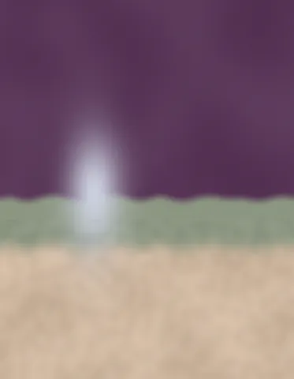

Dutch river cruise stranded as Rhine falls to new record levels / Monsoon moisture brings flooding threats to New Mexico
work_08feaa4151 · 2026-09-28 · awaiting review
Concept 1
Dutch river cruise stranded as Rhine falls to new record levels


Concept 2
Monsoon moisture brings flooding threats to New Mexico



Concept 3
Dutch river cruise stranded as Rhine falls to new record levels